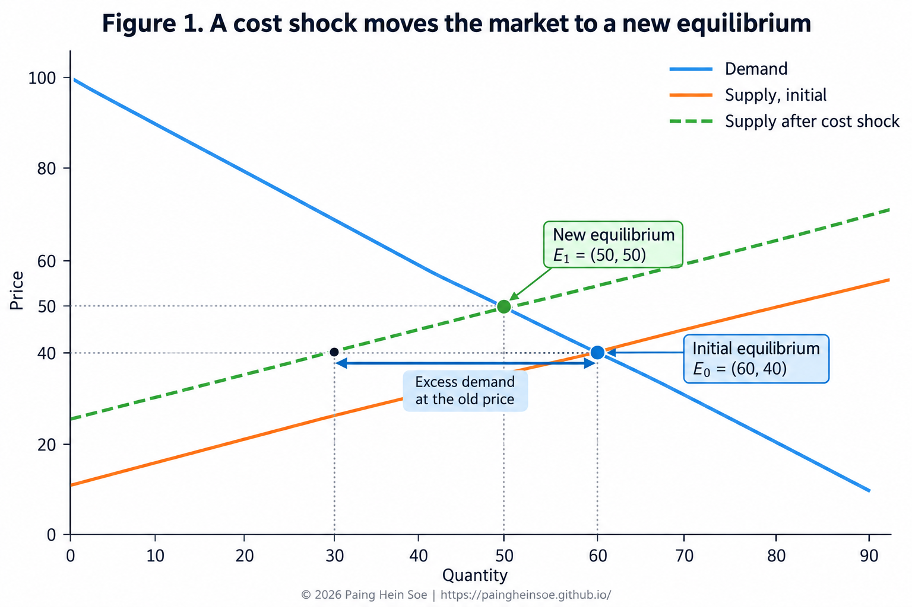
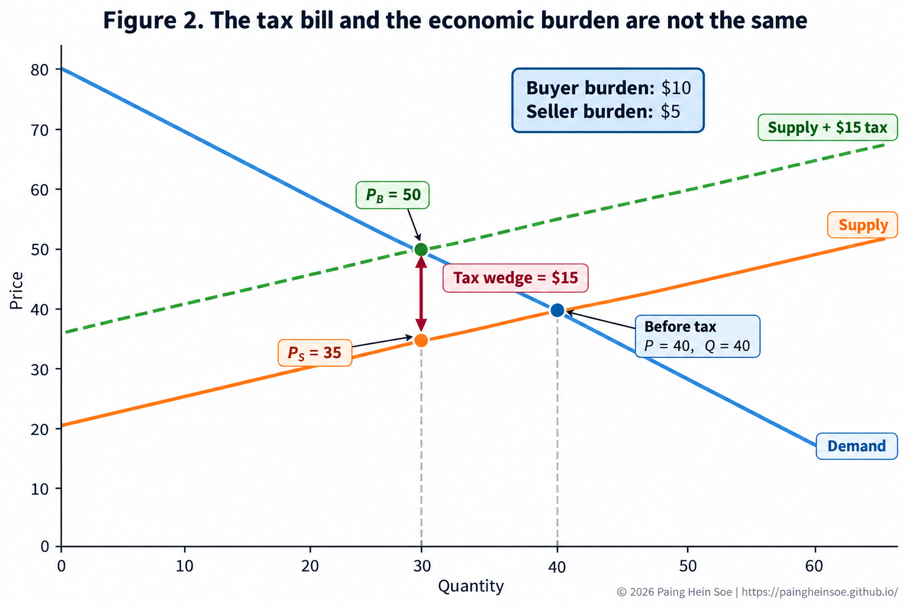
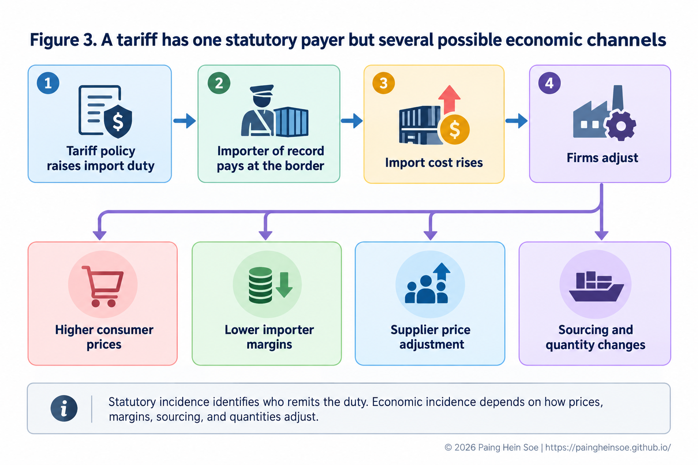
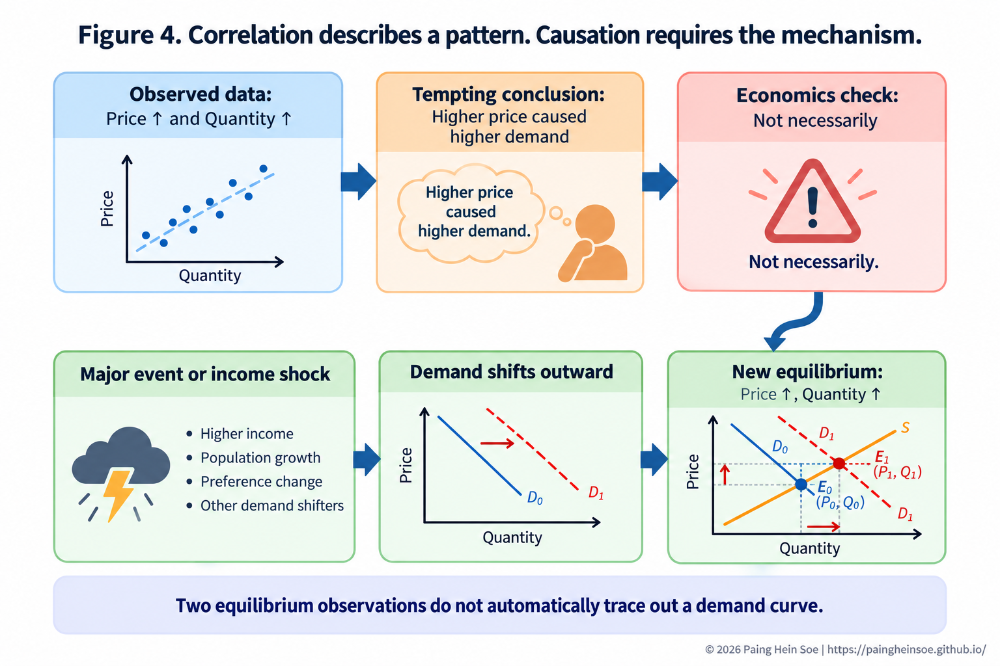

How Supply, Demand, and Policy Shape Economic Outcomes
Why the legal design of a policy is only the beginning of its economic story
Series: Microeconomics Foundations
Thematic area: Economics & Public Policy
A policy can impose a tax, cap a price, or raise the cost of importing a product. But it cannot directly command the final economic outcome.
Markets respond.
Consumers change what they buy. Firms change what they sell. Prices move. Quantities adjust. And the person legally responsible for a cost is not always the person who ultimately bears it.
To understand policy, we therefore need to begin with a more basic question:
How does a market respond when something changes?
1. Start where supply and demand meet
Demand represents how much buyers are willing to purchase at different prices. Supply represents how much sellers are willing to provide.
Their interaction determines the market equilibrium:
\[ Q_D(P^*)=Q_S(P^*) \]
At \(P^*\), the quantity buyers want equals the quantity sellers want to provide.
But an equilibrium is not permanent.
Demand may increase because incomes rise, preferences change, population grows, or a substitute becomes more expensive. Supply may fall because energy, materials, wages, transport, or other production costs rise.
A useful distinction is:
A change in the product’s own price moves us along an existing curve. A change in another underlying factor shifts the curve itself.
Suppose production costs rise. Firms now supply less at each price. At the old equilibrium price, consumers still want the previous quantity, but producers are no longer willing to provide it. The market temporarily has excess demand.
Price then rises. Consumers reduce quantity demanded. Producers respond along the new supply curve. Eventually, a new equilibrium forms.

The sequence matters:
\[ \text{cost shock} \rightarrow \text{supply contracts} \rightarrow \text{excess demand at old price} \rightarrow \text{price adjusts} \rightarrow \text{new equilibrium} \]
A demand increase produces a different pattern. Price also rises, but quantity usually rises rather than falls:
\[ D\uparrow \Rightarrow P\uparrow,\ Q\uparrow \]
while:
\[ S\downarrow \Rightarrow P\uparrow,\ Q\downarrow \]
This gives us the first useful lesson:
A higher price tells us that the market changed. It does not tell us what caused the change.
That becomes particularly important when government policy enters the market.
2. A tax creates a new market adjustment
Suppose a market initially settles at a price of $40 and a quantity of 40 units.
Now the government introduces a $15 tax per unit and requires sellers to remit it.
It may seem that sellers therefore bear the entire $15. But that conclusion ignores the market response.
A tax creates a gap between what buyers pay and what sellers keep:
\[ P_B-P_S=t \]
where:
- \(P_B\) is the price paid by buyers,
- \(P_S\) is the net price received by sellers,
- \(t\) is the tax.
In the illustrative market shown below, the new outcome is:
\[ P_B=\$50,\qquad P_S=\$35,\qquad Q=30 \]
The buyer now pays $10 more than before. The seller receives $5 less. Therefore:
\[ \underbrace{\$10}_{\text{buyer burden}} + \underbrace{\$5}_{\text{seller burden}} = \underbrace{\$15}_{\text{tax}} \]

This gives us an important distinction.
Statutory incidence tells us who is legally responsible for remitting the tax.
Economic incidence tells us who actually bears the cost after the market adjusts.
In this example, sellers remit the tax, but buyers bear two-thirds of the economic burden.
If the same tax were legally imposed on buyers instead, the standard competitive model gives the same final economic outcome. The bookkeeping changes. The underlying tax wedge does not.
So:
\[ \text{Who sends the tax payment} \neq \text{Who necessarily bears the tax} \]
The next question is more interesting: Why do buyers bear $10 while sellers bear only $5?
3. Incidence depends on who can adjust
This is where elasticity becomes useful.
Price elasticity measures how strongly quantity responds to a change in price:
\[ \varepsilon_D= \frac{\%\Delta Q_D}{\%\Delta P} \]
The formula matters, but the intuition can be simpler:
How easily can someone change their behavior?
Imagine two buyers. One can switch immediately to several close substitutes. The other has almost no practical alternative. The first buyer can respond strongly when price rises. The second cannot.
The same logic applies to producers. Some can redirect output, substitute inputs, change suppliers, or enter another market. Others face fixed equipment, contracts, capacity constraints, or limited alternatives.
Under the standard competitive model:
\[ \text{The less elastic side tends to bear more of the tax} \]
Several factors can affect that responsiveness:
- availability of substitutes;
- whether the product is necessary or discretionary;
- switching costs;
- how much time buyers or firms have to adjust;
- production flexibility;
- access to alternative suppliers or markets.
This makes tax incidence much more than an accounting question. It is a question about behavior and alternatives.
4. Tariffs show why the distinction matters in practice
A tariff provides a useful real-world extension of the same idea.
When goods enter the United States, the importer of record is responsible for applicable duties, taxes, and fees. That identifies the statutory responsibility.
It does not tell us the full economic incidence.
After a tariff raises the cost of importing a product, several adjustments are possible.

The importer may accept a smaller margin. The foreign supplier may lower its price. The importer may raise its selling price. A manufacturer using the imported product may face higher input costs. Consumers may eventually pay more. Businesses may also switch suppliers or reduce the quantity imported.
The economic burden can therefore move through a supply chain:
\[ \text{tariff} \rightarrow \text{import price} \rightarrow \text{firm costs and margins} \rightarrow \text{supply-chain response} \rightarrow \text{consumer price} \]
Recent research on U.S. tariffs has shown that pass-through can differ by stage. Importer prices, firm margins, and final consumer prices do not always adjust in the same way or by the same amount.
That distinction is important.
Saying that a tariff is imposed on imports does not, by itself, tell us who ultimately bears the cost. Neither does saying that consumers “pay the tariff.”
The answer depends on pass-through, elasticities, market structure, substitution, supply chains, exchange rates, and time.
The policy defines the rule. Market conditions help determine its incidence.
5. Price controls change the price rule, not the underlying incentives
Taxes allow prices to adjust while creating a wedge between buyer and seller prices. A price control does something different: it limits the price itself.
Suppose equilibrium is $20, but a government imposes a maximum legal price of $15.
At the lower price:
\[ Q_D>Q_S \]
Consumers want more than producers are willing to supply. The result is a shortage.
A binding price floor reverses the imbalance:
\[ Q_S>Q_D \]
and creates excess supply.
The key point is not that price controls are automatically good or bad. It is that:
Changing the legal price does not remove the underlying responses of buyers and sellers.
This is also why several policy questions need to remain separate:
- Affordability asks what people pay.
- Availability asks whether they can actually obtain the product.
- Efficiency asks whether mutually beneficial exchanges are being lost.
- Equity asks how benefits and costs are distributed.
A policy may improve one dimension while creating costs in another. Price alone does not settle the policy question.
6. What we observe is not necessarily what caused it
There is another challenge.
Suppose we collect market data and observe:
\[ P\uparrow,\qquad Q\uparrow \]
Price and quantity are positively correlated.
Does that mean a higher price caused consumers to demand more?
No.
Imagine a major event brings thousands of people into a city. Demand for ride services increases. The new demand pushes both the equilibrium fare and the number of trips upward.
So the actual sequence is:
\[ \text{major event} \rightarrow D\uparrow \rightarrow P\uparrow,\ Q\uparrow \]
Higher prices and higher quantities appear together, but the higher price did not cause the increase in demand.

This is the difference between correlation and causation.
Correlation tells us that two variables move together. Causation asks whether changing one actually changes the other.
Supply and demand make the problem especially clear. Two observed market equilibria do not automatically trace out a demand curve.
If demand shifted between those observations, calculating
\[ \frac{\%\Delta Q}{\%\Delta P} \]
from the two market outcomes does not automatically give us the causal price elasticity of demand.
To identify that effect, economists need a way to separate the price change from other factors that may also change demand. That may come from an external supply shock, a natural experiment, randomized variation, or another credible empirical strategy.
So economic analysis has two related tasks:
\[ \text{Theory asks: What mechanism could produce this outcome?} \]
\[ \text{Empirical analysis asks: Does the evidence identify that mechanism?} \]
7. Policy and markets interact
We began with a simple market equilibrium. Supply and demand meet. A shock changes one side. The old equilibrium no longer works. Buyers and sellers respond until a new outcome emerges.
Policy enters the same system.
A tax changes the effective prices faced by buyers and sellers. Elasticity affects how the burden is divided. A tariff can move through importers, suppliers, firms, and consumers. A price control can prevent the price from clearing the market and create shortages or surpluses. Empirical analysis then asks whether the patterns we observe actually reveal the causal mechanism we think is operating.
Four questions provide a useful way to connect these ideas:
- What changed in the market?
- How can buyers and sellers adjust?
- Who ultimately bears the benefits or costs?
- What evidence tells us why the outcome occurred?
Those questions do not automatically tell us whether a policy is good or bad. They do something more fundamental first.
They help us understand how the policy interacts with the market it is trying to change.
Sources and further reading
- U.S. Customs and Border Protection. Importing Into the United States: A Guide for Commercial Importers. https://www.cbp.gov/trade/basic-import-export/importing-into-the-united-states
- Amiti, Mary, Stephen J. Redding, and David E. Weinstein. The Impact of the 2018 Tariffs on Prices and Welfare. Journal of Economic Perspectives, 2019.
- Cavallo, Alberto, Gita Gopinath, Brent Neiman, and Jenny Tang. Tariff Pass-Through at the Border and at the Store: Evidence from US Trade Policy. American Economic Review: Insights, 2021.